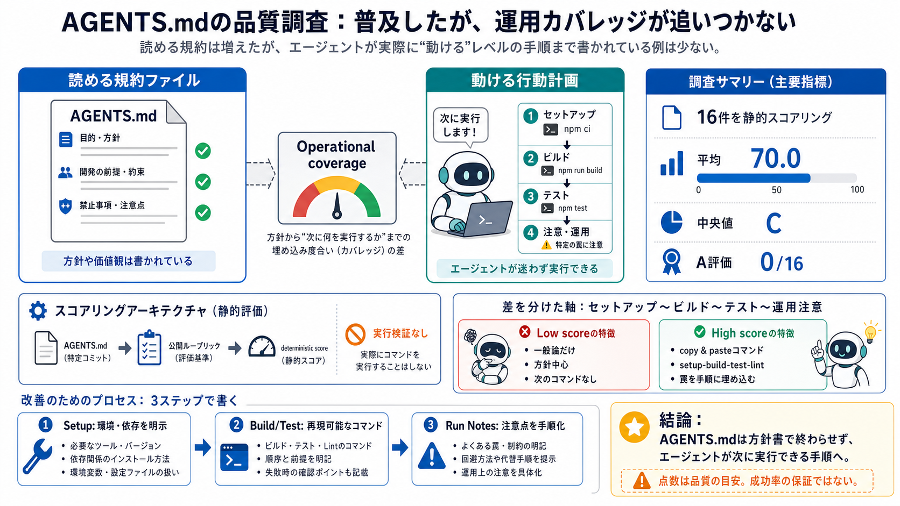

AGENTS.md Complete Guide for Engineering Teams (2026)
# AGENTS.md Complete Guide for Engineering Teams in 2026. This guide covers structure, examples, monorepo patterns, and …

普及した「共通入口」なのに、エージェントが動くための運用情報が足りない――という結論を、静的スコアで示す調査の要点です。
AGENTS.mdは複数AIエージェントの“共通入口”になりつつあるのに、品質が高くないように見えるギャップがあります。
AGENTS.mdは“文章”ではなく“行動計画”として評価されるべきなのに、現状は方針寄りで止まりがちです。
著者はLLM審判ではなく、公開ルーブリックにもとづく静的スコアリングで、AGENTS.mdの“形”を採点します。
抽出16件（条件：20kスター以上・直下にAGENTS.md）を採点した結果、平均70.0・中央値C、そしてA評価はゼロでした。
採点で差がついたのは、見出し構造よりも「セットアップ〜テスト〜運用注意」までのoperational coverageでした。
最高例はmaxcountryman/underwayで、セットアップ〜ビルド〜テスト〜lintまで“コピペ可能なコマンド”で示すためA評価（91.0）を得ました。
“標準が普及したはずなのに、直下に良いAGENTS.mdを置いていない”という逆説が浮かびます。
改善の方向性は明確で、セットアップからテストまでの手順を“エージェントがそのまま進められる形”にします。
この評価は静的なので、書かれたコマンドが本当に実行できるかは保証しません。点数は“次に実行できる指示があるか”の目安です。
AGENTS.mdは“方針書”で終わらせず、セットアップ〜テストまでを部品化して運用情報を増やすことが、エージェントの実行価値を上げます。
このスライドは、ユーザー提示の調査要約（AGENTS.md品質の静的スコアリング、結果、前提、限界、意見）に基づいて圧縮しています。
# AGENTS.md Complete Guide for Engineering Teams in 2026. This guide covers structure, examples, monorepo patterns, and …
AI Agent Skills Guide 2026 covering SKILL.md, Claude Code, OpenAI Codex, OpenClaw, and security. # AI Agent Skills Guide…
# AGENTS.md in 2026: Turning Agent Prompts into Reviewable Repo Policy. Six production repositories—OpenAI Codex, Sentry…
Apr 15, 2026 — Read the folder structure at .agent/ and write an AGENTS.md that serves as the root config file. It shoul…
# Top AI Agent Standards to Know in 2026. Protocols tell agents how to connect. Standards tell them what to know. Here a…